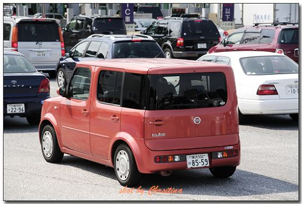
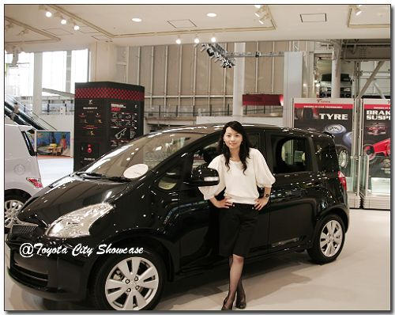

晚上在日本腾枝县的一间酒店住下。
两天过去了，跟团出游就是赶，不知是对日本期望高还是赶的缘故，对这个国家居然有些失望。加上当地导游大姐对新事物似乎不大关心，除了介绍些日常生活，有关汽车及市场经济等方面一概不知。也许应该找个年轻的当地导游。我想对于日本的失望还因为中国突飞猛进的发展，物质生活的提高所致。中国大城市除了市民素质普遍低于日本之外，所见外观与日本差不太多，也只是外观差不太多。但也只是形似，神似欠的火候多呢~
日本是一个高度社会规范化统一化的国家，有一亿两千六百万人口，相当于中国从农村到城市打工的人数。和香港一样汽车一律为右边驾驶。土地私有化，东京周边大多为2-3层民房，为了防地震建房多为轻便材料，所以冬天冷夏天热，而建造一幢2-3层的楼房费用不是太高。日本使用的筷子均从中国进口，而日本砍伐一棵数需要繁杂的手续，时间约为三个月。想到我们中国人骄傲地说自己每年出口多少多少美圆，就感到不是滋味，我们开发了国土上多少自然资源？接着又廉价地将这些资源卖到世界各地！不明白这有什么好炫耀？难道我们不应该担忧吗？日本人民的环保意识比我们要强不知道多少倍，我们国家的普及教育还未普及到每个孩子，有很多人吃不饱饭，谈环保，不知道怎么谈法？日本的高度统一化规范化令人感到害怕，当我们大呼“小日本，小日本”的时候，是否想过这是怎样一个团结的民族？我们呢？
今天去了富士山，日本人心目中的神山。上山后把我冻坏了，能不冷么？光腿穿着裙子~~寥寥数笔先记上，有时间再写。
东京的银座。以前我一直没弄明白什么是银座？以为是CLUD或酒吧聚集的地方，现在才清楚就跟我们喊新街口，称呼上海的外滩、淮海路一样的概念。那个穿着和服的女人是晚上去娱乐店里上班的“妈妈”。据说一套和服比一套世界品牌时装要贵很多咯。银座的大商场里很多品牌的价格和国内金鹰、伊士丹差不多卖价。还是那句话，有钱在哪里都一样过，就是环境差点吧~没钱在天堂也不会舒心的~


日本将近70%为这种小型，车尾象被刀削过似的，恰恰这种款式的小车还特别多。日本的琪达外观和国内的一模一样。


横滨开港150周年庆典


零碎留影


6 Responses to “2/日本之行”
2007-05-03
日本国内的汽车多为厢式、轻小型、节能型的经济型车辆，这也许与日本有限的国土面积和资源危机意识有关。而我们国内大多都是大排量汽车，讲究的是排场和身份，两个邻国的差别从用车的观念上清晰可辨。“生于忧患，死于安乐”，对于这句中国名言，日本学得很好，我们自己却。。。。。。不过好在现在国内的节能意识已经形成。
2007-05-03
没想到你会失望。。。或许是个人感觉不同吧。我欣赏的是日本井然的秩序、清新的空气、安静的环境以及在这些个因素的烘托下的发达。
2007-05-04
出片还是要有景啊!
想看看富士山的PP:)
2007-05-04
你没打电话啊
2007-05-04
强烈要求多放点有你的照片!!!呵呵~~~
2007-05-05
太棒了，有这么多内容
Leave A Reply
存档只读，评论已关闭。